Trust in politicians/institutions
The polls are too irregular and sparse to do a general poll of polls model. For this reason, I have created separate visualisations for different pollsters. The dotted lines represent the presidential elections and dash-dotted the start of the government.
FOCUS
2024-04-16
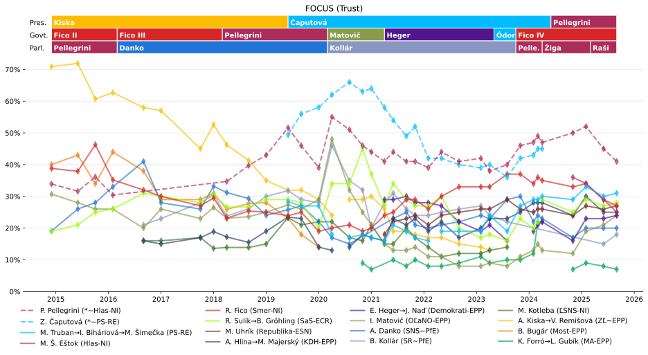
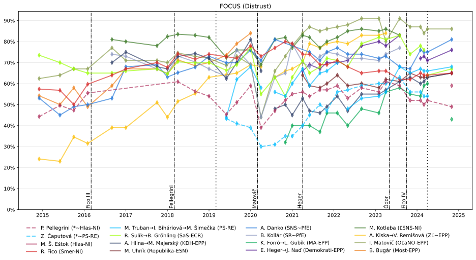
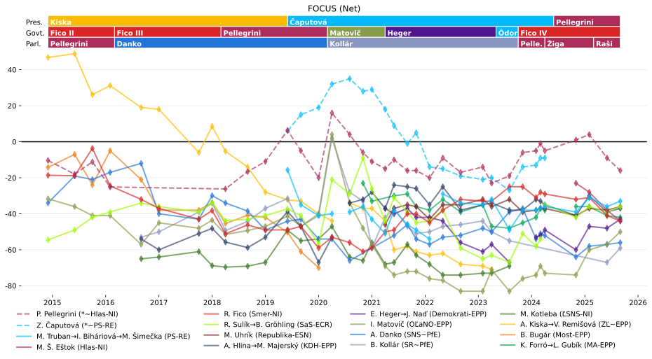
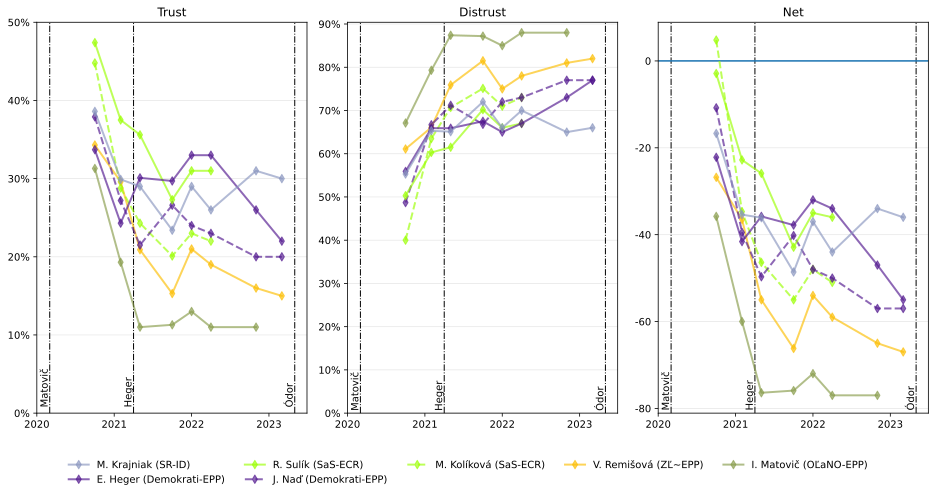
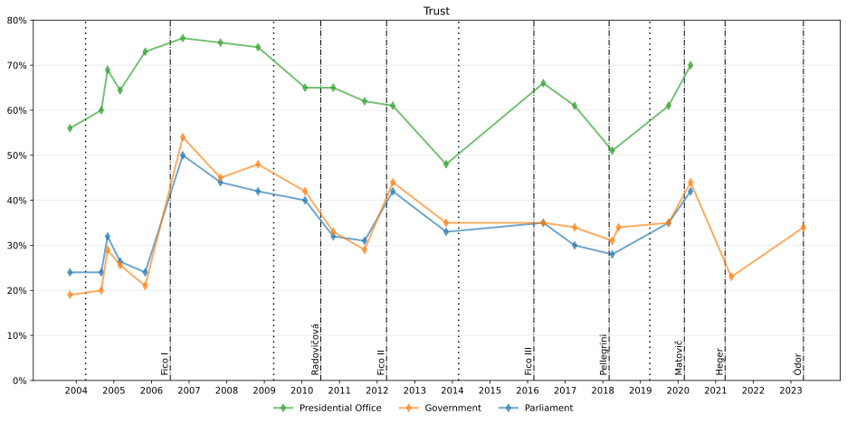
MEDIAN SK
2024-01-09
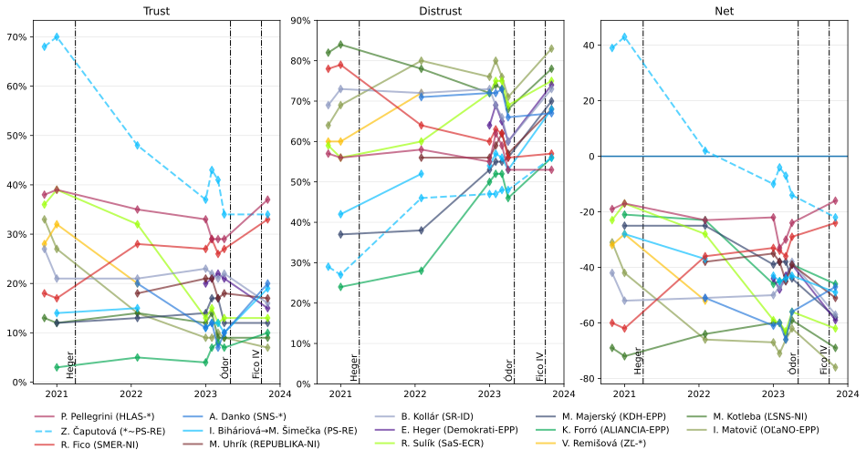
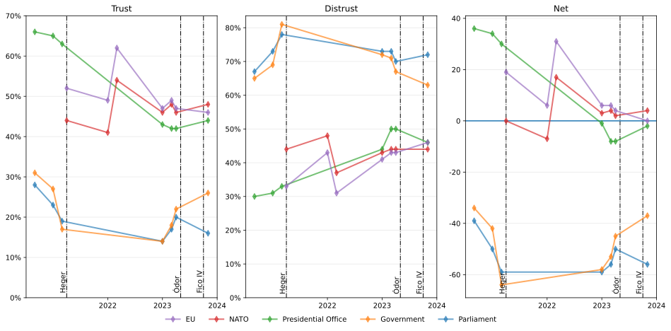
IPSOS - Politicians
2023-08-24
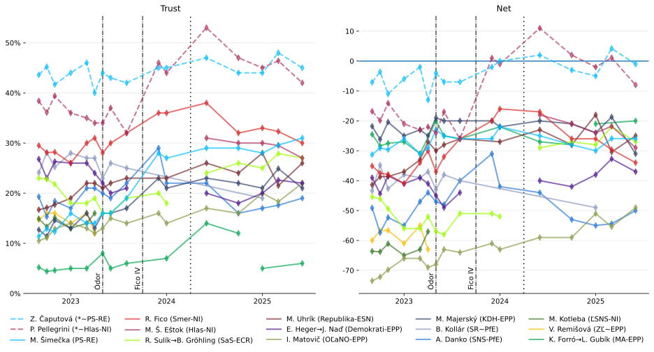
AKO - Politicians
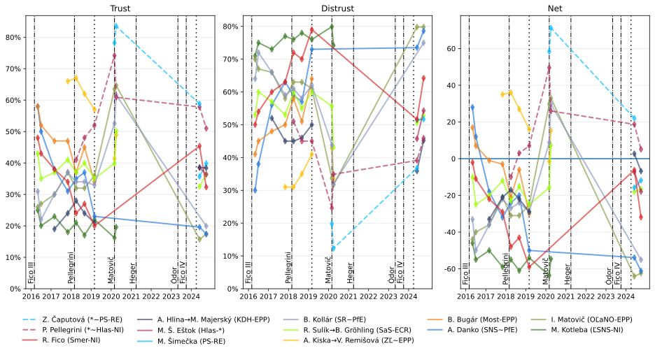
Spontaneous trust
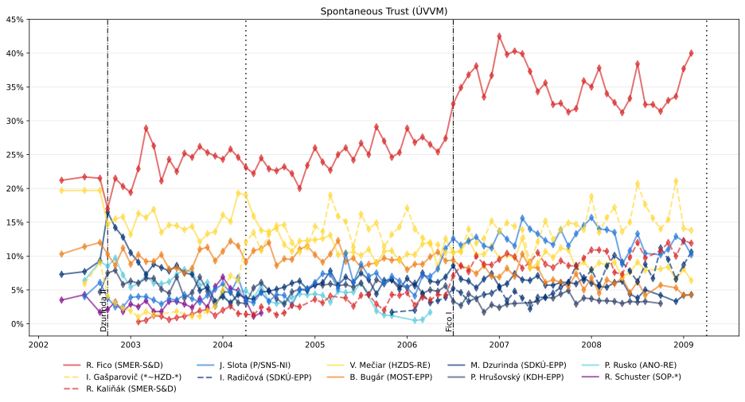
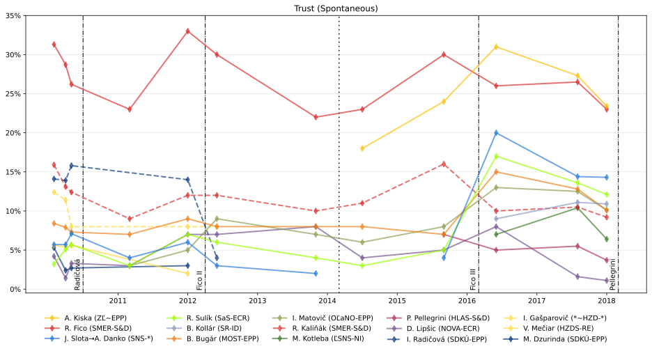
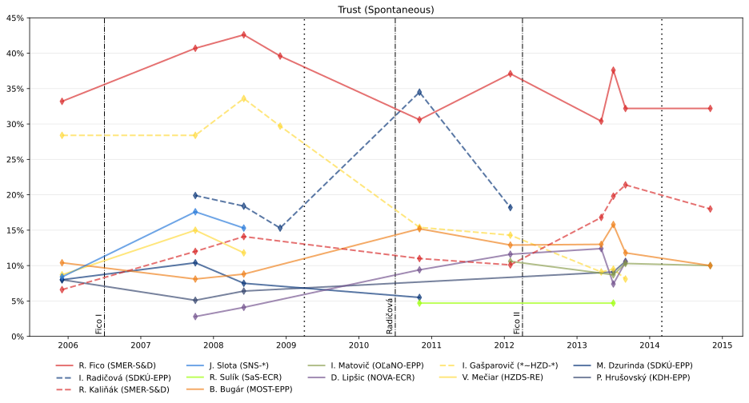